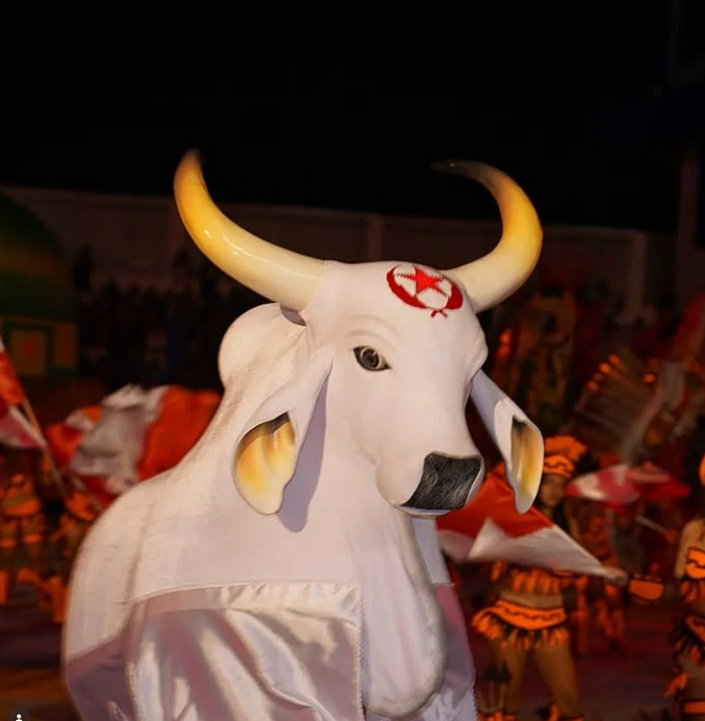

Vermelho e branco
Quero representar o Tira-Prosa
O Tira-Prosa representa tradição, emoção e a força da torcida vermelha e branca dentro do Festival de Fonte Boa.
Sua presença marca a cultura popular local, reunindo paixão, identidade e participação do povo em cada apresentação.
Cores
Vermelho e Branco
Símbolo
Estrela vermelha